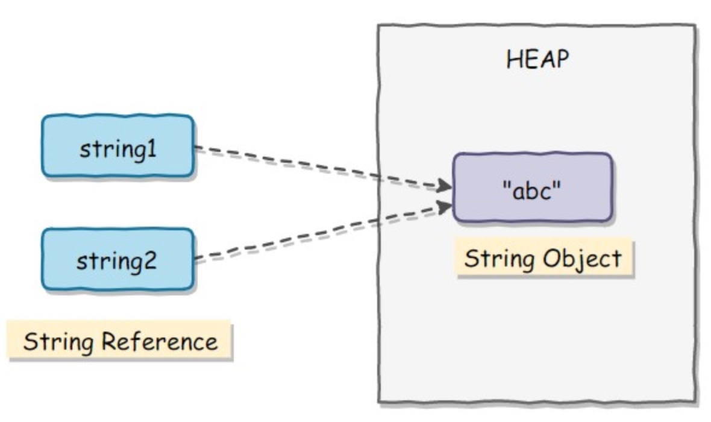

- 不积跬步无以至千里，不积小流无以成江海
- 千里之行，始于足下
数据类型
基本类型
- byte/8
- char/16
- short/16
- int/32
- float/32
- long/64
- double/64
- boolean/~
boolean 只有两个值：true、false，可以使用 1 bit 来存储，但是具体大小没有明确规定。JVM 会在编译时期将 boolean 类型的数据转换为 int，使用 1 来表示 true，0 表示 false。JVM 并不支持 boolean 数组，而是使用 byte 数组来表示 int 数组来表示。
包装类型
基本类型都有对应的包装类型，基本类型与其对应的包装类型之间的赋值使用自动装箱与拆箱完成。
Integer x = 2; // 装箱 int y = x; // 拆箱缓存池
new Integer(123) 与 Integer.valueOf(123) 的区别在于：
- new Integer(123) 每次都会新建一个对象；
- Integer.valueOf(123) 会使用缓存池中的对象，多次调用会取得同一个对象的引用。
Integer x = new Integer(123); Integer y = new Integer(123);
System.out.println(x == y); // false
Integer z = Integer.valueOf(123);
Integer k = Integer.valueOf(123);
System.out.println(z == k); // truevalueOf() 方法的实现比较简单，就是先判断值是否在缓存池中，如果在的话就直接返回缓存池的内容。
public static Integer valueOf(int i) { if (i >= IntegerCache.low && i <= IntegerCache.high)
return IntegerCache.cache[i + (-IntegerCache.low)];
return new Integer(i);
}在 Java 8 中，Integer 缓存池的大小默认为 -128~127。
static final int low = -128; static final int high;
static final Integer cache[];
static {
// high value may be configured by property
int h = 127;
String integerCacheHighPropValue =
sun.misc.VM.getSavedProperty("java.lang.Integer.IntegerCache.high");
if (integerCacheHighPropValue != null) {
try {
int i = parseInt(integerCacheHighPropValue);
i = Math.max(i, 127);
// Maximum array size is Integer.MAX_VALUE
h = Math.min(i, Integer.MAX_VALUE - (-low) -1);
} catch( NumberFormatException nfe) {
// If the property cannot be parsed into an int, ignore it.
}
}
high = h;
cache = new Integer[(high - low) + 1];
int j = low;
for(int k = 0; k < cache.length; k++)
cache[k] = new Integer(j++);
// range [-128, 127] must be interned (JLS7 5.1.7)
assert IntegerCache.high >= 127;
}编译器会在自动装箱过程调用 valueOf() 方法，因此多个 Integer 实例使用自动装箱来创建并且值相同，那么就会引用相同的对象。
Integer m = 123; Integer n = 123;
System.out.println(m == n); // true基本类型对应的缓冲池如下：
- boolean values true and false
- all byte values
- short values between -128 and 127
- int values between -128 and 127
- char in the range \u0000 to \u007F
在使用这些基本类型对应的包装类型时，就可以直接使用缓冲池中的对象。
String
概览
String 被声明为 final，因此它不可被继承。
在 Java 8 中，String 内部使用 char 数组存储数据。public final class String implements java.io.Serializable, Comparable<String>, CharSequence {
/** The value is used for character storage. */
private final char value[];
}在 Java 9 之后，String 类的实现改用 byte 数组存储字符串，同时使用 coder 来标识使用了哪种编码。
public final class String implements java.io.Serializable, Comparable<String>, CharSequence {
/** The value is used for character storage. */
private final byte[] value;
/** The identifier of the encoding used to encode the bytes in {@code value}. */
private final byte coder;
}value 数组被声明为 final，这意味着 value 数组初始化之后就不能再引用其它数组。并且 String 内部没有改变 value 数组的方法，因此可以保证 String 不可变。
不可变的好处
- 可以缓存 hash 值
因为 String 的 hash 值经常被使用，例如 String 用做 HashMap 的 key。不可变的特性可以使得 hash 值也不可变，因此只需要进行一次计算。 - String Pool 的需要
如果一个 String 对象已经被创建过了，那么就会从 String Pool 中取得引用。只有 String 是不可变的，才可能使用 String Pool。  - 安全性
String 经常作为参数，String 不可变性可以保证参数不可变。例如在作为网络连接参数的情况下如果 String 是可变的，那么在网络连接过程中，String 被改变，改变 String 对象的那一方以为现在连接的是其它主机，而实际情况却不一定是。 - 线程安全
String 不可变性天生具备线程安全，可以在多个线程中安全地使用。
- 可以缓存 hash 值
String, StringBuffer and StringBuilder
- 可变性
- String 不可变
- StringBuffer 和 StringBuilder 可变
- 线程安全
- String 不可变，因此是线程安全的
- StringBuilder 不是线程安全的
- StringBuffer 是线程安全的，内部使用 synchronized 进行同步
- 可变性
String Pool
字符串常量池（String Pool）保存着所有字符串字面量（literal strings），这些字面量在编译时期就确定。不仅如此，还可以使用 String 的 intern() 方法在运行过程中将字符串添加到 String Pool 中。
当一个字符串调用 intern() 方法时，如果 String Pool 中已经存在一个字符串和该字符串值相等（使用 equals() 方法进行确定），那么就会返回 String Pool 中字符串的引用；否则，就会在 String Pool 中添加一个新的字符串，并返回这个新字符串的引用。
下面示例中，s1 和 s2 采用 new String() 的方式新建了两个不同字符串，而 s3 和 s4 是通过 s1.intern() 方法取得一个字符串引用。intern() 首先把 s1 引用的字符串放到 String Pool 中，然后返回这个字符串引用。因此 s3 和 s4 引用的是同一个字符串。
String s1 = new String("aaa"); String s2 = new String("aaa");
System.out.println(s1 == s2); // false
String s3 = s1.intern();
String s4 = s1.intern();
System.out.println(s3 == s4); // true如果是采用 "bbb" 这种字面量的形式创建字符串，会自动地将字符串放入 String Pool 中。
String s5 = "bbb"; String s6 = "bbb";
System.out.println(s5 == s6); // true在 Java 7 之前，String Pool 被放在运行时常量池中，它属于永久代。而在 Java 7，String Pool 被移到堆中。这是因为永久代的空间有限，在大量使用字符串的场景下会导致 OutOfMemoryError 错误。
new String("abc")
使用这种方式一共会创建两个字符串对象（前提是 String Pool 中还没有 "abc" 字符串对象）。
- "abc" 属于字符串字面量，因此编译时期会在 String Pool 中创建一个字符串对象，指向这个 "abc" 字符串字面量；
- 而使用 new 的方式会在堆中创建一个字符串对象。
创建一个测试类，其 main 方法中使用这种方式来创建字符串对象。
public class NewStringTest { public static void main(String[] args) {
String s = new String("abc");
}
}使用 javap -verbose 进行反编译，得到以下内容：
// ... Constant pool:
// ...
#2 = Class #18 // java/lang/String
#3 = String #19 // abc
// ...
#18 = Utf8 java/lang/String
#19 = Utf8 abc
// ...
public static void main(java.lang.String[]);
descriptor: ([Ljava/lang/String;)V
flags: ACC_PUBLIC, ACC_STATIC
Code:
stack=3, locals=2, args_size=1
0: new #2 // class java/lang/String
3: dup
4: ldc #3 // String abc
6: invokespecial #4 // Method java/lang/String."<init>":(Ljava/lang/String;)V
9: astore_1
// ...在 Constant Pool 中，#19 存储这字符串字面量 "abc"，#3 是 String Pool 的字符串对象，它指向 #19 这个字符串字面量。在 main 方法中，0: 行使用 new #2 在堆中创建一个字符串对象，并且使用 ldc #3 将 String Pool 中的字符串对象作为 String 构造函数的参数。
以下是 String 构造函数的源码，可以看到，在将一个字符串对象作为另一个字符串对象的构造函数参数时，并不会完全复制 value 数组内容，而是都会指向同一个 value 数组。
public String(String original) { this.value = original.value;
this.hash = original.hash;
}
运算
- 参数传递
- float 与 double
- 隐式类型转换
- switch
继承
- 访问权限
- 抽象类与接口
- super
- 重写与重载
Object 通用方法
- 概览
- equals()
- hashCode()
- toString()
- clone()
关键字
- final
- static